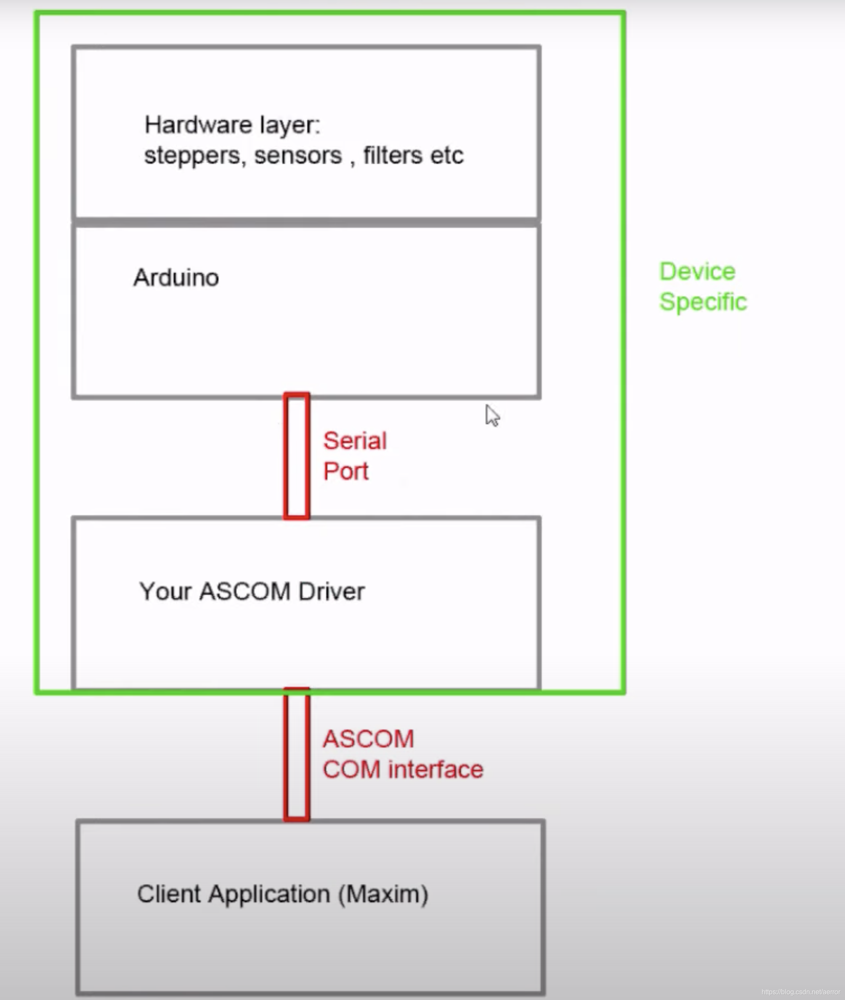

近来在玩天文，自己DIY了一个电动的调焦。ASCOM平台是一个天文的驱动和软件的开发标准，它是一个开源的开放平台。主要是使用了.net的技术。按这个协议写好了，你写的驱动就可以给非常多的遵守这个标准的应用使用了。
开发工具：
1. Visual studion 2012/2013，太高的版本好像开发包不支持。
2.Inno setup, 用来制作驱动的安装包，ascom的开发包，有自动生成这个安装脚本的工具，很方便
3.开发文档：https://ascom-standards.org/Developer/Index.htm
4.安装ASCOM6.5平台之后，和上面的工具之后，下载开发工具包https://ascom-standards.org/Downloads/PlatDevComponents.htm
5.安装工具之后，在vs中新建工具就有了ascom相关的工程模板了。
6.我是使用串口来编程，需要向卖家获得串口的命令，返回，设置等协议文档。
7.驱动调用是可以Thread.sleep来同步操作的
8. 写好之后，Target选AnyCpu, 然后使用ASCOM工具包里的Driver Install Script Generator就可以生成Inno setup的安装脚本，然后打包发布。
9.源代码在https://github.com/aerror2/LsAutoFocuser ，可以参考一下。
以下是驱动的架构图。
